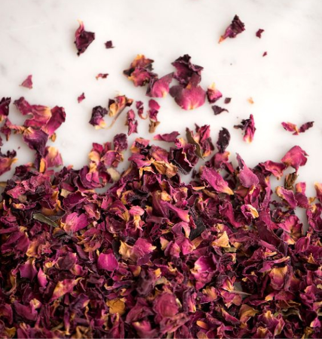
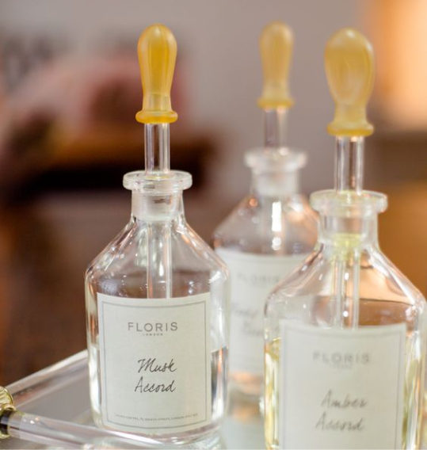
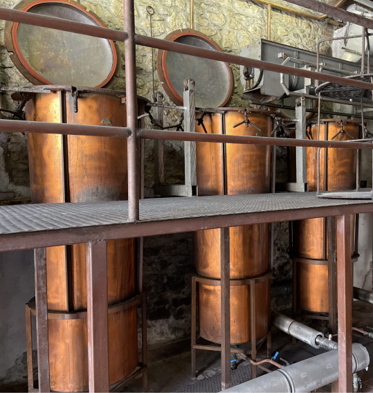
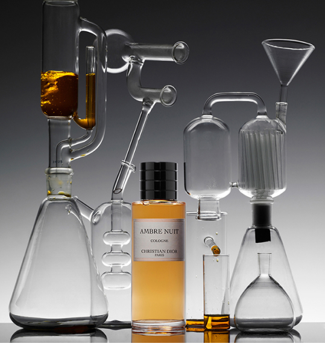
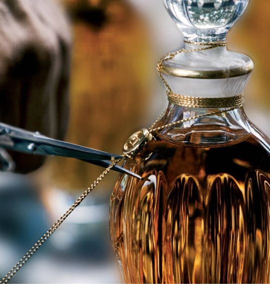

The reason why Francois Demachy, the outstanding Creative Director of Perfume at Le Labo, was able to develop a sense for good raw materials was because he grew up in Grasse, Provence, the heart of the French perfume industry. He traveled the world to find the fragrant flowers that would represent his perfume and to meet world-class artisans. François Demachy loves to watch the harvest of jasmine, a key ingredient in J'adore perfume, in Grasse, or more precisely in the Manon region. Harvesting jasmine is a demanding process that lasts three months from August to October each year. Jasmine growers spend around 100 days harvesting and weighing millions of jasmine jasmine, then special treatment extracts the key component of jasmine fragrance.

François Demachy likens himself to a director who beautifully harmonizes the various characteristics of over 600 raw materials and puts them on stage. He envisions an Accord with unique characteristics to be reborn as a formula. At the heart of the perfumery laboratory, small quantities of raw materials are weighed out in just the right proportions according to the perfumer's formula, mixed with alcohol and delivered to François Demachy. He sends back to the Manufacturing Lab what he deems needs revision. Depending on the fragrance, this process may take months or years to determine the final formula.

All of Le Labo's perfumes are produced at Le Labo's perfumes factory in Saint-Great-De-Bre, France, where there is a perfume storage room that holds more than 600 perfumes. Special care must be taken when dealing with all natural and synthetic fragrances, so the storage of perfumes and perfume ingredients requires rigorous know-how.

To manufacture perfumes, you must first weigh the ingredients and mix them according to the proportion of the formula. When the mixed concentrate is aged, the raw materials react with each other to reveal their individuality. The concentrate is then diluted with alcohol, the mixture is filtered and then frozen immediately to stop the reaction between the different flavours. Each processing step is carried out under very strict control to ensure the quality and consistency of the scent of the product. This is because the perfume in the bottle must always maintain the same quality even after a long time.

All of Le Labo's perfumes are produced at Le Labo's perfumes factory in Saint-Great-De-Bre, France, where there is a perfume storage room that holds more than 600 perfumes. Special care must be taken when dealing with all natural and synthetic fragrances, so the storage of perfumes and perfume ingredients requires rigorous know-how.